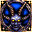
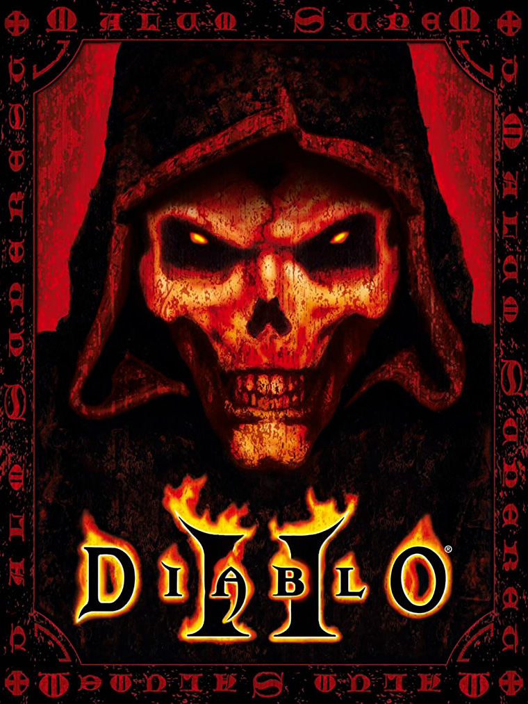

Diablo II: Lord of Destruction |
|
| Tiempo de juego | 6s |
| Última actividad | 11/12/2025 15:51:44 |
| Añadido | 11/11/2025 13:35:25 |
| Modificado | 10/12/2025 11:25:46 |
| Estado de finalización | Jugado |
| Librería | Playnite |
| Fuente | |
| Plataforma | PC (Windows) |
| Fecha de lanzamiento | 29/6/2000 |
| Puntuación de la Comunidad | 88 |
| Puntuación de la Crítica | 90 |
| Puntuación de usuario | |
| Género | Hack and slash/Beat 'em up Role-playing (RPG) |
| Desarrollador | Blizzard North |
| Editor | Blizzard Entertainment |
| Característica | Co-Operative Multiplayer Single Player |
| Enlaces | |
| Tag | |
Esto no es un juego, es EL VICIO, con la expansión que agarró un juego perfecto y lo convirtió en una leyenda inmortal.
El juego que nos hizo farmear horas, días y meses. El que nos hizo putear por ese "drop" que no salía. El que nos hizo volver al ciber una y otra vez. ¿La historia? ¡Al carajo! El hermano de Diablo, Baal, anda suelto con su ejército y tenés que ir a cagarlo a palazos.
Lord of Destruction no fue un "DLC", fue una segunda parte que metió:
El "Baal run". El "Cow level". El sonido de una runa grosa cayendo al piso. Si la palabra "adicción" tuviera un ícono, sería este.
Leyenda Absoluta.